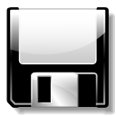
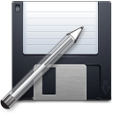
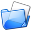
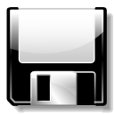
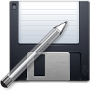
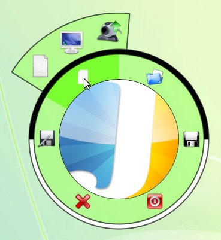

 Enregistrer un fichier
 Enregistrer sous
Fermer Jaint
Palette de gestion de fichier

Ouvir un fichier

Enregistrer un fichier

Enregistrer sous
Fermer Jaint
 Fermer l'onglet courant
Fermer l'onglet courant


Nouveau fichier : Taille de l'image en pixel, choisie par l'utilisateur
 Nouveau fichier avec une capture d'écran
Nouveau fichier avec une capture d'écran
Nouveau fichier à partir de la webcam (Nécessite le JMF)